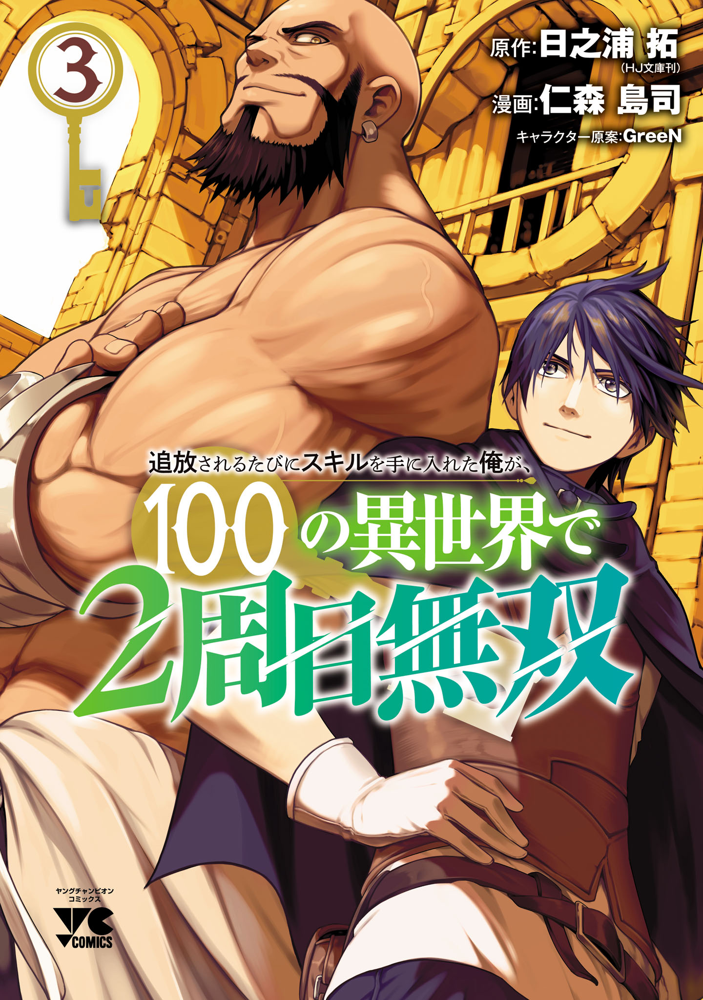

I Got a New Skill Every Time I Was Exiled
I Got a New Skill Every Time I Was Exiled, and After 100 Different Worlds, I Was Unmatched
Author: Hinoura Takumi, Nimori Shimatsukasa
Translator: Haruka Kuze
Genre: Reincarnation, Time Travel, Magic, Action, Isekai
စွန့်စားသူတစ်ဦးဖြစ်တဲ့ Ed ကို အသုံးမကျဘူးဆိုပြီး
အဖွဲ့ကနေထုတ်လိုက်ပါတယ်။ ဒါပေမယ့် သူက စိတ်မဆိုးပဲ ပျော်နေတယ်။
ဘာကြောင့်လဲ?!
သူပျော်တာအကြောင်းပြချက် မရှိပျော်တာတော့မဟုတ်ပါဘူး။ သူဟာ
အဲ့လိုအထုတ်ခံရတိုင်း “Exiled Skill” လို့ခေါ်တဲ့ overpowered skill
တစ်ခုကို ရရှိလို့ပါ။ Ed ဟာ သူ၏မူလကမ္ဘာကိုပြန်နိုင်ဖို့အတွက်
ကမ္ဘာပေါင်းတစ်ရာက သူရဲကောင်းပါတီ တစ်ရာကနေ အထုတ်ခံမှရပါမယ်။ ထိုသို့
အထုတ်ခံရပြီးတဲ့နောက် သူ့မူလကမ္ဘာကိုမပြန်ခင် နောက်ဆုံးလိုအပ်ချက်အနေနဲ့
သူပထမဆုံးရောက်ခဲ့တဲ့ ကမ္ဘာရဲ့အခြေအနေကို ပြန်သွားရပါတယ်။ Ed ဟာ
သူမြင်လိုက်ရတဲ့ မြင်ကွင်းကြောင့် အလွန်တရာတုန်လှုပ်သွားခဲ့တယ်။
“အိုကေကွာ အစကနေ ပြန်စမယ်” ဆိုပြီး စိတ်ဆုံးဖြတ်လိုက်တဲ့ Ed တစ်ယောက်
သူ့ရဲ့ overpowered “Exiled Skills” တွေနဲ့ ဘာတွေဆက်လုပ်မလဲ?
Manga အစအဆုံးမပေါ်ပါက website ကို refresh လုပ်ပေးပါ
Manga အစအဆုံးမပေါ်ပါက website ကို refresh လုပ်ပေးပါ